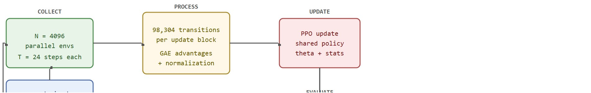

"The robot did not learn to walk faster. The simulator learned to fall faster, so the policy could recover faster, so the update arrived faster."
A Locomotion Researcher, Watching the Clock
This section assumes familiarity with Proximal Policy Optimization (PPO) rollout mechanics and advantage estimation from sections 15.4 and 15.5. The parallel recipe developed here is extended in section 17.5, which adds teacher-student distillation on top of the same training loop, and in section 17.6, which addresses throughput and cost engineering at scale. The ideas about reward shaping hazards introduced here recur in Part 4 alongside domain randomization and sim-to-real transfer in sections 20.2 and 20.3.
A quadruped robot that took two weeks to train in 2019 can now (as of 2024) acquire a walking policy in under twenty minutes on a single GPU. That shift did not come from faster hardware alone; it came from running 4096 simulated robots simultaneously, each tripping, recovering, and updating the shared policy in the same wall-clock second. Parallel RL became the default entry point for legged locomotion, drone control, and dexterous manipulation as the iteration cycle dropped from days to coffee breaks. This section builds the parallel training loop piece by piece, explains why short rollout horizons outperform long ones, and develops the evaluation discipline that separates policies that look fast in training from policies that actually transfer.
Start the timer, pour a coffee, and by the time the cup is empty a quadruped that has never moved is trotting across randomized terrain: that is the literal claim behind the recipe Rudin et al. used to train ANYmal locomotion in under 20 minutes on a single GPU, with 4096 Proximal Policy Optimization (PPO) environments, a 24-step horizon at 50 Hz, terrain and command randomization, and RSL-RL as the runner. Reproducing that result on a Unitree Go2 or an ANYmal C means versioning four things together in one training artifact: the simulator contact model, the PPO rollout geometry, the reward terms, and the reset and terrain distribution. Change any one silently and the 20-minute wall-clock number stops meaning anything.
The parallel-RL recipe behind fast locomotion training turns on a few control decisions that make a huge rollout useful: short horizons, many environments, stable normalization, randomized starts, and a held-out evaluation panel. Figure 17.2A captures the discipline at the heart of the recipe: many robots practicing on varied terrain, while a separate test panel refuses to be impressed by training reward alone.

The key question is practical: how much simulated walking experience reaches the learner per update, and how do we keep that experience fresh enough that PPO is still optimizing the policy that collected it?
Fast locomotion training usually uses many short rollouts rather than a few long ones. Short horizons reduce policy lag, where policy lag is the gap between the policy that collected a batch of experience and the policy currently being updated from it, while thousands of environments provide enough samples for stable minibatches (a minibatch being one shuffled slice of the collected transitions used for a single gradient step).
Suppose a locomotion run uses $N=4096$ environments and a rollout horizon of $T=24$ control steps at 50 Hz. One PPO update then contains $98{,}304$ transitions, but each environment contributes only $0.48$ seconds of fresh behavior before the policy updates.
This is typically the central tradeoff in practice, though its exact shape depends on the simulator's contact model and the task's reward horizon. Larger $N$ increases batch size without lengthening policy lag. Larger $T$ improves temporal credit assignment but lets the rollout drift farther from the policy that will be updated. Consider the alternative that shows why parallelism dominates. A single environment at the same horizon would need over 170 sequential hours of simulated walking to match the 1,966 aggregate robot-seconds that one parallel update delivers. The parallel version finishes that same work in under a second of wall-clock time. A single-environment baseline required 50,000 sequential episodes to converge; 4,096 environments running simultaneously needed only around 300 parallel updates. Each parallel update already contains the diversity that sequential training could accumulate only across hundreds of restarts.
So far: batch size ($N$) and rollout length ($T$) trade off against each other, one policy update packs in far more experience than a single simulated robot could gather sequentially, and that gap in aggregate robot-seconds is why parallel training finishes in minutes instead of days.
Learning to Walk in Minutes Using Massively Parallel Deep Reinforcement Learning (Rudin et al., CoRL 2021): 4096 parallel Isaac Gym environments train quadruped locomotion policies in under 20 minutes on a single GPU. It established the many-short-rollouts recipe that turns wall-clock training time for legged robots from days into minutes.
The loop is: reset many robots across terrain and command strata, collect $T$ steps, compute advantages, shuffle the $T N$ samples into minibatches, run a few PPO epochs, update normalization statistics, and evaluate on held-out seeds. The policy never sees an isolated episode as the primary training object; it sees a dense rollout block. The advantage-computation step is spelled out in full, with the GAE formula, in step 3 of the algorithm below; treat "compute advantages" here as a placeholder that the algorithm resolves.
Input: policy parameters $\theta$, environment count $N$, rollout horizon $T$, learning rate $\alpha$, minibatch count $M$, PPO epochs $K$, held-out seed panel $\mathcal{S}_{\text{eval}}$
Output: trained policy $\pi_\theta$ with versioned normalization statistics $\mu$, $\sigma$
Code Fragment 17.2.1 calculates the sample geometry for a typical fast locomotion run. The aggregate robot-seconds are large, but the per-environment horizon stays short to control policy lag.
# Size a parallel locomotion PPO update from first principles.
# Short per-environment rollouts keep policy lag small while N supplies scale.
num_envs = 4096
horizon = 24
control_hz = 50
minibatches = 8
ppo_epochs = 5
samples = num_envs * horizon
seconds_per_env = horizon / control_hz
aggregate_robot_seconds = samples / control_hz
minibatch_size = samples // minibatches
sample_reuse = ppo_epochs
print(f"samples per update: {samples:,}")
print(f"seconds per env before update: {seconds_per_env:.2f}")
print(f"aggregate robot-seconds: {aggregate_robot_seconds:,.1f}")
print(f"minibatch size: {minibatch_size:,}")
print(f"sample reuse per rollout: {sample_reuse} PPO epochs")Expected output: the trace should make policy lag visible. If a recipe reports only total samples and hides horizon, minibatch size, and PPO epochs, it is hard to tell whether the update is fresh or over-reused.
Trace the rollout geometry with a deliberately tiny recipe so the arithmetic is visible, then scale it to the real numbers. Take $N = 4$ environments, horizon $T = 3$ control steps, control rate $50$ Hz, $M = 2$ minibatches, $K = 2$ PPO epochs. Step 1, collect: each of the 4 environments runs 3 steps, so the rollout block holds $4 \times 3 = 12$ transitions. Step 2, freshness: each environment contributed only $T / \text{Hz} = 3 / 50 = 0.06$ seconds of behavior before the update, so the data is fresh. Step 3, aggregate experience: $12 / 50 = 0.24$ robot-seconds total across all environments. Step 4, minibatching: $12 / 2 = 6$ samples per minibatch. Step 5, reuse: with $K = 2$ epochs, every sample is seen twice before being discarded. Now substitute the production values $N = 4096$, $T = 24$, $M = 8$, $K = 5$: the same five steps give $98{,}304$ transitions, $0.48$ s freshness, $1{,}966$ robot-seconds, $12{,}288$ per minibatch, and 5x reuse. The structure is identical; only the magnitudes change.
In practice, RSL-RL, rl_games, and SKRL hide much of this rollout bookkeeping inside runners and storage buffers. Keep the recipe visible anyway: environment count, horizon, minibatches, epochs, normalization, and evaluation seeds should be printed into the run artifact.
Think of N and T like the width and depth of a fishing net cast into a river. Widening the net (more parallel environments) lets you sample a broader stretch of the river at once, giving you more fish per haul. But widening the net does not let each individual pocket of mesh reach deeper into the current. To fish deeper, you must lengthen the net (longer horizon). No matter how wide the net gets, a shallow net will always miss the fish that swim at depth.
A common assumption is that 4096 parallel environments give the policy a temporally deep view of robot behavior. This is wrong. Each environment contributes only 0.48 seconds of behavior before the policy updates (24 steps at 50 Hz). No amount of parallelism extends that window. This matters in locomotion: a robot may stumble at step 2 and fall at step 18. A horizon too short to span that gap prevents the advantage estimate from crediting the stumble-prevention action. N (environment count) controls batch width and statistical stability. T (rollout horizon) controls temporal depth and credit-assignment reach. Neither substitutes for the other.
The common mistake is to tune reward shaping until the training curve rises, then discover that the policy learned to exploit a reset, termination, or command distribution. Fast training makes this mistake cheaper to repeat, not less serious.
Three additional failure modes appear after the training curve looks good. First, observation normalization statistics computed on training seeds can become stale when the policy is evaluated on held-out terrains or on hardware, causing action saturation on unusual inputs. Second, a horizon that is too short (fewer than 8 to 12 steps on a 50 Hz controller) can prevent the policy from learning to recover from stumbles, because the advantage estimate never sees the consequence of a near-fall. Third, aggressively large minibatch counts with many PPO epochs push the KL divergence beyond safe limits and cause reward collapse mid-training; in practice this appears as a sudden drop in the training return after several hundred updates, not as a divergence at the start.
RSL-RL stores running mean and variance for observations via its normalize_observation flag, but those statistics are saved separately from the policy weights in model_{iter}.pt. When you export a checkpoint for hardware deployment, copy the companion normalizer.pt file alongside it; a policy loaded without its normalizer will receive raw unnormalized observations and will produce saturated or near-zero actions immediately (saturated meaning the network's output layer is pushed to its extreme values, so joint commands clamp at their limits instead of tracking the intended motion), even though the network weights are correct. To verify, print the normalizer's running mean at the first inference step and confirm it is non-zero and plausible for your observation space.
A locomotion team can run a baseline recipe with 4,096 environments, a 24-step horizon, eight minibatches, and five PPO epochs, then compare it to a 2,048-environment version on the same held-out terrains. The right comparison asks whether wall-clock falls without increasing fall rate, foot slip, or command-tracking error.
In practice, ANYbotics trains the ANYmal quadruped's locomotion controllers with a many-short-rollouts recipe closely descended from Rudin et al.'s under-20-minute result in Isaac Gym, and deploys the resulting policies on autonomous inspection robots that walk oil-and-gas platforms and substations. The short-horizon, terrain-randomized parallel training is what lets the same policy handle grating, stairs, and slick metal floors after only a handful of hardware iterations.
Goal: empirically see how rollout horizon $T$ and environment count $N$ affect both wall-clock speed and final walking quality, the central tradeoff of this section.
Tools needed: Python, Stable-Baselines3, and Gymnasium with MuJoCo (pip install stable-baselines3[extra] gymnasium[mujoco]). Use the Ant-v4 environment with a vectorized SubprocVecEnv.
What to vary: hold the total transitions per update fixed (for example $N \times T = 4096$) and sweep three splits: many short rollouts ($N = 256$, $T = 16$), balanced ($N = 64$, $T = 64$), and few long rollouts ($N = 8$, $T = 512$). Set PPO's n_steps = T and n_envs = N accordingly, keep n_epochs and batch_size identical across runs.
What to observe: log ep_rew_mean against wall-clock time and against environment steps for each split. You should see the many-short-rollouts split reach a good forward-walking reward in the least wall-clock time, while the few-long-rollouts split wastes parallel capacity and trains slowly. Then push the short horizon too far ($T = 4$) and watch credit assignment break down: the policy struggles to learn recovery and the reward plateaus low, reproducing the short-horizon failure mode described in this section.
The simulator can teach walking in minutes, but it can also teach falling with excellent confidence intervals. Always read the reset reasons.
Direction 1: Whole-body control with concurrent loco-manipulation. The parallel-RL recipe is being extended from pure locomotion to simultaneous base movement and arm manipulation. ETH Zurich's Legged Robotics group demonstrated a Unitree H1 humanoid learning loco-manipulation skills (loco-manipulation: coordinating leg movement and arm reaching in a single policy, rather than treating walking and grasping as separate controllers) entirely in Isaac Lab with 4096 parallel environments, reported in "Humanoid Locomotion as Next Token Prediction" (Chi et al., arXiv 2024). The policy receives proprioception plus wrist wrench and learns gait and arm pose jointly, closing the gap between navigation and object interaction.
Direction 2: Foundation models as reward designers for parallel RL. Rather than hand-coding reward terms, recent work prompts LLMs to generate and iteratively refine reward functions that are then evaluated in massively parallel GPU simulators. "EUREKA: Human-Level Reward Design via Coding Large Language Models" (Ma et al., ICLR 2024) showed that GPT-4-generated rewards matched or exceeded human-engineered terms on 29 out of 29 IsaacGym tasks, including dexterous pen-spinning and quadruped trotting, without any manual reward tuning.
Direction 3: Differentiable simulation inside the RL loop. Gradient-through-physics approaches such as DiffTaichi and the JAX-based MuJoCo MJX backend (Google DeepMind, 2024) allow the policy gradient to flow directly through simulator contact dynamics, bypassing Monte Carlo advantage estimation for smooth tasks. "Isaac Lab: Unified and Modular Robot Learning" (Mittal et al., IEEE RA-L 2023, extended in practice to 2024 releases) incorporated differentiable articulation, and concurrent work at Carnegie Mellon explores hybrid analytic-RL updates that reduce required parallel environments by an order of magnitude for some gaits.
Open problem for a PhD student: Parallel-RL locomotion still requires 2 to 4 hardware iterations before a sim-trained policy satisfies production fall-rate budgets on unstructured terrain such as wet pavement or compliant foam. No published metric over Isaac Lab terrain panels reliably predicts real-world fall rate without physical rollouts. A tractable thesis contribution is an automated sim-to-real gap estimator: a lightweight predictor trained on contact-force distribution statistics from held-out simulation panels that forecasts hardware fall rate before any physical deployment, enabling the training loop to reject policies likely to fail on hardware at zero hardware cost.
Can you compute samples per update, seconds per environment, aggregate robot-seconds, minibatch size, PPO epochs, and held-out evaluation seeds for a locomotion recipe? If not, the training speed claim is underspecified.
Being able to compute those quantities is the prerequisite; reading what they imply is the point. The recipe becomes useful when every speed claim is paired with a freshness claim: how old is the behavior the learner is updating against? A wide rollout with 10 PPO epochs may train quickly, but it also asks the learner to reuse behavior from an older policy. A narrower rollout with fewer epochs may use fresher data but underfill the GPU.
Report the whole recipe, not the headline time. A reproducible locomotion result names ten things: task randomization, reset curriculum (the schedule that decides which terrain difficulty or starting pose an environment resets into, so easy resets dominate early and hard ones are phased in as the policy improves), control frequency, horizon, action scaling, reward terms, policy architecture, normalization, evaluation seeds, and hardware. Omit any one and the wall-clock number stops being reproducible.
| Tool or Library | Role in the Topic | Builder Advice |
|---|---|---|
| RSL-RL | Legged-locomotion PPO runner | Use it when the task follows the high-throughput locomotion pattern and you need fast iteration on reward and terrain curricula. |
| rl_games | GPU-oriented PPO storage and learner loop | Use it when direct device buffers and mature PPO configuration matter more than custom algorithm research. |
| SKRL | Readable multi-backend RL library | Use it when you want a clearer algorithm surface while still connecting to Isaac Lab tasks. |
| Isaac Lab | Robot task, scene, sensor, and randomization layer | Use it to define the walking task and expose it to the training runner through a wrapper. |
| TensorBoard or W&B | Reward-term and reset-reason audit trail | Use it to catch shaped-reward exploits before the aggregate curve hides them. |
A robust implementation starts by freezing the recipe fields that affect learning speed. The example below records the batch geometry and policy-lag budget next to the evaluation panel, so a later table can compare runs without mixing different configs.
# Store the recipe fields that make a fast locomotion run auditable.
# Policy lag is controlled by horizon and sample reuse, not by env count alone.
from dataclasses import dataclass, asdict
@dataclass
class LocomotionRecipe:
envs: int
horizon: int
minibatches: int
ppo_epochs: int
control_hz: int
eval_seed_panel: str
def as_row(self) -> dict[str, object]:
return asdict(self)
recipe = LocomotionRecipe(
envs=4096,
horizon=24,
minibatches=8,
ppo_epochs=5,
control_hz=50,
eval_seed_panel="terrain_v3_holdout_0000_0255",
)
print(recipe.as_row())Recording those recipe fields makes runs comparable, but a comparable run is still only as trustworthy as what it does once it leaves the simulator. A policy that trains in minutes but falls on the first hardware step has not learned to walk: it has learned to survive the simulator. When the policy learns quickly and transfers poorly, inspect the reward terms and reset reasons before you change the network. Such a policy may minimize falls by exploiting termination, track commands only on easy terrain, or depend on privileged simulator signals that deployment will not provide.
For fast locomotion recipes, compare only construct-matched metrics that are co-computed in one pass on one configuration: same held-out terrain panel, same policy checkpoint, same seed set, same command distribution, and the same success definition. Save wall-clock, steps per second, command error, fall rate, energy proxy, and reset reasons as one artifact.
The parallel-RL recipe learns locomotion quickly by pairing many short rollouts with disciplined randomization and evaluation. The wall-clock result matters only when success, fall rate, and transfer checks are measured on a separate panel.
Beginner (weekend): Ant locomotion baseline in Gymnasium. Train a walking policy on the Ant-v4 environment using Stable-Baselines3 PPO with 16 parallel environments, logging each reward term separately to a TensorBoard run. The key challenge is configuring observation normalization correctly and confirming that the policy actually locomotes forward rather than exploiting a termination condition.
Intermediate (1-2 weeks): Quadruped gait curriculum in Isaac Lab. Implement the short-horizon parallel PPO recipe from this section using Isaac Lab's velocity_tracking task and RSL-RL as the runner, then add a flat-to-rough terrain curriculum that promotes environments only when the held-out fall rate drops below a threshold. The key challenge is versioning the normalization statistics with each checkpoint so that evaluation on held-out terrain seeds uses the same normalizer the policy was trained with.
Intermediate (1-2 weeks): PyBullet vs. MuJoCo transfer gap study. Train the same reward function and horizon recipe on a simulated biped in both PyBullet (HumanoidBulletEnv) and MuJoCo (Humanoid-v4 via Gymnasium), then compare command-tracking error and fall rate on matched held-out seeds to quantify how much of the performance gap is simulator physics versus reward tuning. The key challenge is co-computing all metrics in a single evaluation pass so that the comparison is construct-matched and not confounded by different episode lengths or reset distributions.
Choose $N$, $T$, minibatches, PPO epochs, and control frequency for a quadruped walking task. Compute samples per update and seconds per environment, then explain how you would evaluate the policy on held-out terrain seeds.
This section turned fast locomotion into a recipe: short horizons, many environments, limited sample reuse, logged reward terms, and held-out evaluation. Next, continue with Section 17.3, where Isaac Lab exposes that recipe through SKRL, rl_games, and RSL-RL runners.
Rudin et al. are the key reading for the phrase "learning to walk in minutes." The paper is useful here because it ties fast wall-clock training to terrain curricula, massive parallelism, and locomotion-specific reward design.
Isaac Gym grounds the fast-locomotion recipe in GPU-resident physics. Use it to understand why short horizons and thousands of environments can deliver enough fresh samples for PPO updates.
Brax gives a contrasting accelerator-native path to high-throughput control. It is most relevant here as a reminder that fast walking recipes depend on batch geometry as much as simulator brand.
NVIDIA Isaac Lab documentation.
Isaac Lab is the practical place to express the locomotion recipe: task randomization, reward terms, terrain curricula, and runner integration. Its docs are the implementation bridge from recipe fields to launchable training jobs.
Google DeepMind MuJoCo MJX documentation.
MJX is relevant when the fast-walking recipe needs MuJoCo-style model structure with JAX execution. Read it for the static-shape and batched-simulation constraints that affect horizon and batch choices.
RSL-RL is the runner most closely associated with this style of legged-locomotion PPO. Its repository helps readers inspect the config fields behind horizon, minibatch count, epochs, and normalization.